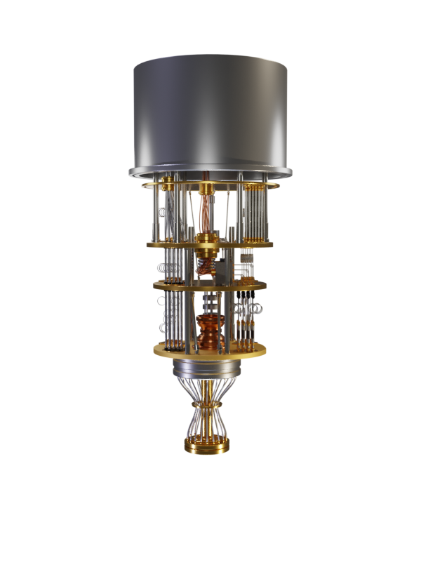

Impacts on society
Quantum materials have helped to shape the way in which we live our lives by providing us a great number of advantages which have changed the way that we live:
- Quality of life will improve, as it is likely that quantum materials will help improve disease forecasting, allowing for the correct treatments to be provided at a quicker rate
- Due to quantum materials supporting switchable electrical currents, it is likely that we can reduce the total energy loss dramatically
- Due to quicker cryptography, it is likely that we can boost the economy quickly

Quantum computing
Due to the developments in quantum materials this has allowed for the evolution of quantum computers to speed up rapidly. These can help to provide a range of benefits, including:
- The rapid development of the internet of things, including developments on smart cities, smart road networks, smart ATC, smart factories and smart supply and distribution
- Can be used to perform quicker calculations which can be used to potentially solve problems involved with cryptography
- These can be used to potentially break encryption
- These can also be used to create a zero trust system, until a user is able to prove otherwise
However, while quantum computers can provide some extremely useful advantages, there are also some costs that we will need to be aware of:
- They may break existing computer architecture, which would lead to disruption inside the CPU
- They are extremely difficult to program and therefore control
- They have high potential costs, which are likely to never be recouped by the company spending the money on this technology